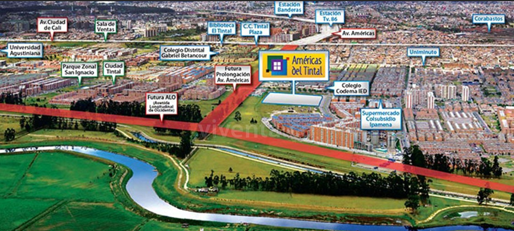
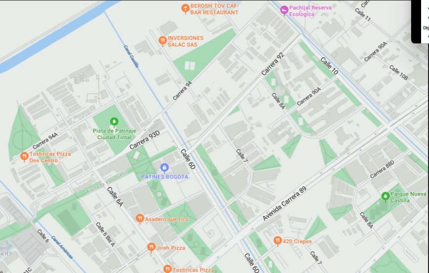

Titulo: Evolucionando Mentes Digitales
Este titulo se creo en base a lo que se quiere lograr con esta practica y actividades
Problematica
 Una de las principales problemáticas que enfrentan los adultos mayores en la actualidad es la falta de conocimiento y habilidades en el uso de las tecnologías digitales. Esta brecha limita su acceso a servicios en línea, comunicación con familiares y participación activa en una sociedad cada vez más digitalizada, generando aislamiento y dificultad para adaptarse a los cambios del entorno.
- Los factores más relevantes para tener en cuenta e identificar la brecha digital que existe actualmente en Bogotá se debe a 4 factores que son: motivación, Acceso material, Habilidades digitales y aprovechamiento. Gracias a estos factores sabemos que la brecha digital que hay en Bogotá no es tan grande, puesto a que, en los 4 factores mencionados, Bogotá encabeza la lista con la menor brecha digital en el país.
Objetivos

Objetivo General: Instruir a las personas mayores en el uso de las
tecnologias modernas en la ciudad de Bogota, en la localidad de
kennedy.
Objetivos Especificos:
- Crear conocimiento sobre el manejo de un computador
- Enseñar a navegar por internet, y como registrarse para la realizacion de algun tramite
- Dominio del manejo de herramientas ofimaticas como Word y Excel
- Dominio en el manejo de correos electronicos y manejo de un vocabulario adecuado a la hora de usarlos
Justificacion

Muchas veces, las personas, especialmente personas que vivieron en pueblos o veredas con poco avance tecnológico, al no conocer o entender algo por completo deciden simplemente no intentarlo, o por el simple hecho de ser algo nuevo lo ven como algo extraño e innecesario gracias a su crianza y costumbres, debido a esto, pueden generar un constante miedo de “dañar algo” o desconfigurar la máquina. Con esta práctica se busca mitigar ese miedo y generar confianza en el uso de los computadores y dar a entender lo importante que son estas tecnologías hoy en día. Al no saber usar o manejar algo solemos recurrir a otra persona con el conocimiento adecuado para cubrir esa necesidad, pero muchas veces se puede necesitar algo con urgencia y tal vez en ese momento no podamos contar con la ayuda de esa persona. Con esta práctica se busca generar una independencia por medio del conocimiento adecuado en el manejo de un computador, gracias a este conocimiento la persona podrá utilizar el equipo sin ayuda de terceros y no depender del tiempo ni el conocimiento de otras personas.
Referencias
- Khan Academy. (s.f) La brecha digital global. Khan Academy. https://es.khanacademy.org/computing/ap-computer-science-principles/the-internet/x2d2f703b37b450a3:the-digital-divide/a/the-global-digital-divide
- MinTIC. (2023, Diciembre) ÍNDICE DE BRECHA DIGITAL- RESULTADOS 2022. MinTIC. https://colombiatic.mintic.gov.co/679/articles-333029_presentacion.pdf
- Derecho a la Educacion (s.f) El aprendizaje y la educación de adultos. Derecho a la Educacion. https://www.right-to-education.org/es/issue-page/th-mes/el-aprendizaje-y-la-educaci-n-de-adultos
- Iberdrola. (s.f) La brecha digital en el mundo y por qué provoca desigualdad. Iberdrola. https://www.iberdrola.com/compromiso-social/que-es-brecha-digital